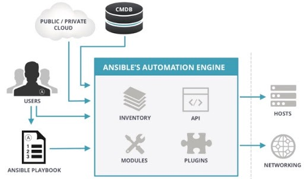

Ansible
Informações Gerais
Conceito
Arquitetura
Instalação/Atualização/Remoção
Configuração
Informações Gerais
Descrição: Ansible é uma solução para automação de provisionamento e gerenciamento
centralizado de mudanças em um parque de máquinas Linux ou Windows.
Licença: Open source gratuito/
Categoria: IaC (Infra como Código)
Empresa: RedHat
Concorrentes: Chef, Puppet, SaltStack, CFEngine, etc.
Diferenciais:
- Open Source e gratuita
- Simlicidade (YAML)
- Baixa curva de aprendizado
- Agentless (sem agentes instalados)
- Recursos poderosos
Conceito
Ansible se baseia em 4 vertentes, são elas:
- Gerenciamento de mudanças
- Não pemite que alterações sejam aplicadas duas vezes (Idempotente).
- Conhece os estado das máquinas (System State).
- Garante as versões corretas das aplicações (corrige se for necessário).
- Alerta sobre mudanças ocorridas no ambiente.
- Provisionamento: Criação (em alguns casos), instalações e configurações de máquinas conforme parametros pré-estabelecidos.
- Automação
- Execução de tarefas de forma automática e ordenada.
- Permite estabelecer condições para a execução de determinadas tarefas.
- Relalização de tarefas diretamente no prompt do servidor (AD-HOC).
- Orquestração: Trabalho com multiplos servidores, aplicações, tarefas e ambiente hibrido (varios OS).
Arquitetura

Ansible Automation Engine
- Inventory:b> Lista de maquinas (hosts) a serem gerenciadas pelo Ansible.
- API: Interface para execução dos comandos do Ansible.
- Modules: b> Interface para execução dos comandos do Ansible.
- Plugins: Interface para execução dos comandos do Ansible.
Users: Pessoas que vão gerenciar o Ansible.
Playbook: Lista de instruções a serem executadas nos hosts.
CMDB: Banco que armazena as configurações do ambiente.
Hosts: Maquinas nas quais os playbooks serão aplicados.
Networking: Equipamentos de rede nos quais os playbooks serão aplicados.
Public/Private Cloud: Provedores de infra na nuvem.
Instalação/remoção
Modos de instalação
- Gerenciador de pacotes Debian (apt)
sudo apt get update
sudo apt get upgrade
sudo apt auto-remove
sudo apt install ansible
Remoção: sudo apt remove ansible
- Gerenciador de pacotes RedHat (yum ou dnf)
sudo dnf install ansible
- Gerenciador de pacotes Python (pip)
sudo pip3 install ansible
Importante: Instalando com o 'pip3' sempre pega a versão mais recente do ansible.
Ver a versão instalada: ansible --version
Ver a ultima versão disponível:
Ansible releases
Problemas communs de instalação:
- Depois de instalado com o pip3 o comando ansible --version exibe a mensagem:
-bash: /usr/bin/ansible: No such file or directory
Isto ocorre porque o local onde o ansible foi instalado não está na PATH do SO.
Pra ver onde ele foi instalado use o comando: which ansible
Atualização: sudo pip3 install ansible --upgrade
Remoção sudo apt auto-remove
Configurações
ansible.cfg: Principal arquivo de configuração do Ansible
Fica em: /etc/ansible/ansible.cfg
Precedencia para interpretação das configurações
- Local apontado na variável de ambiente: ANSIBLE_CONFIG
- ansible.cfg no diretório corrente
- .ansible.cfg no diretório HOME
- /etc/ansible/ansible.cfg
Documentação do ansible.cfg
Opções importantes para configuração
- forks: Qtde de processos executado simultaneamente durante um comando Ansible.
Pode ser aumentado para dar mais vazão aos processamentos, dependendo da capacidade da máquina.
- log_path: Local osnde serão gravados os logs od Ansible
- module_name: Modulo default para execução de tasks
- executable: Bash a ser utilizado
- ansible_managed: